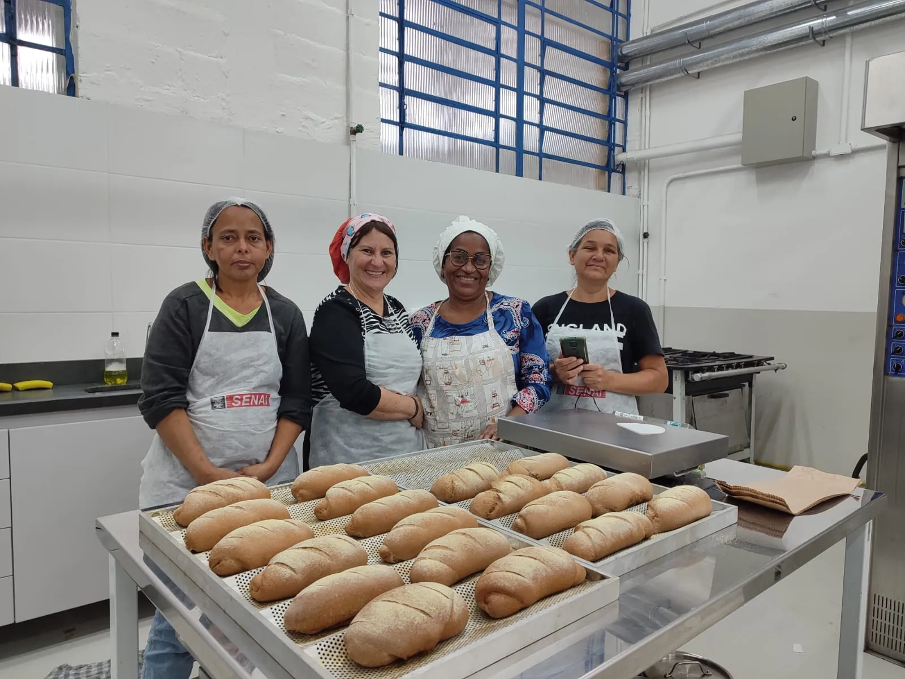
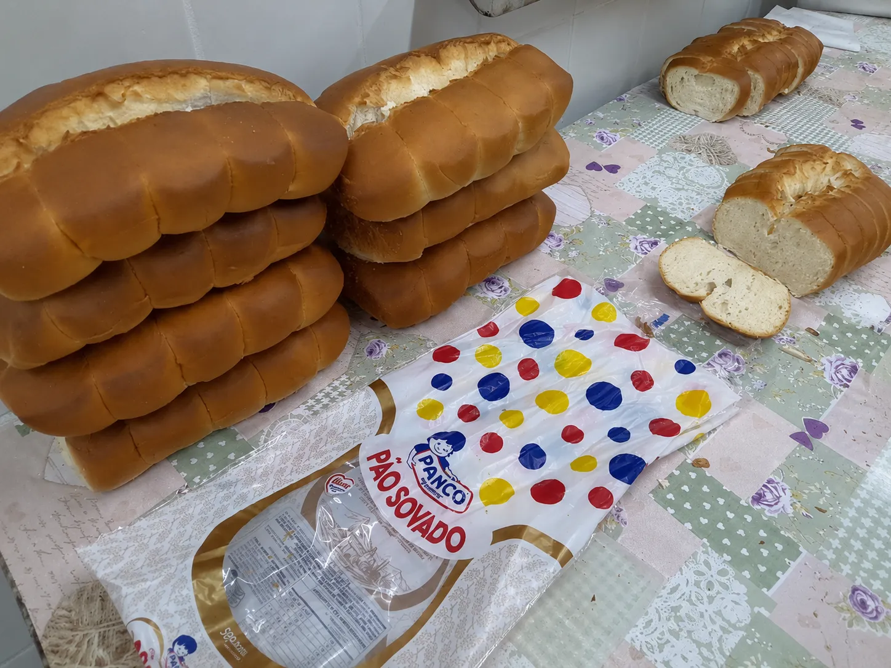
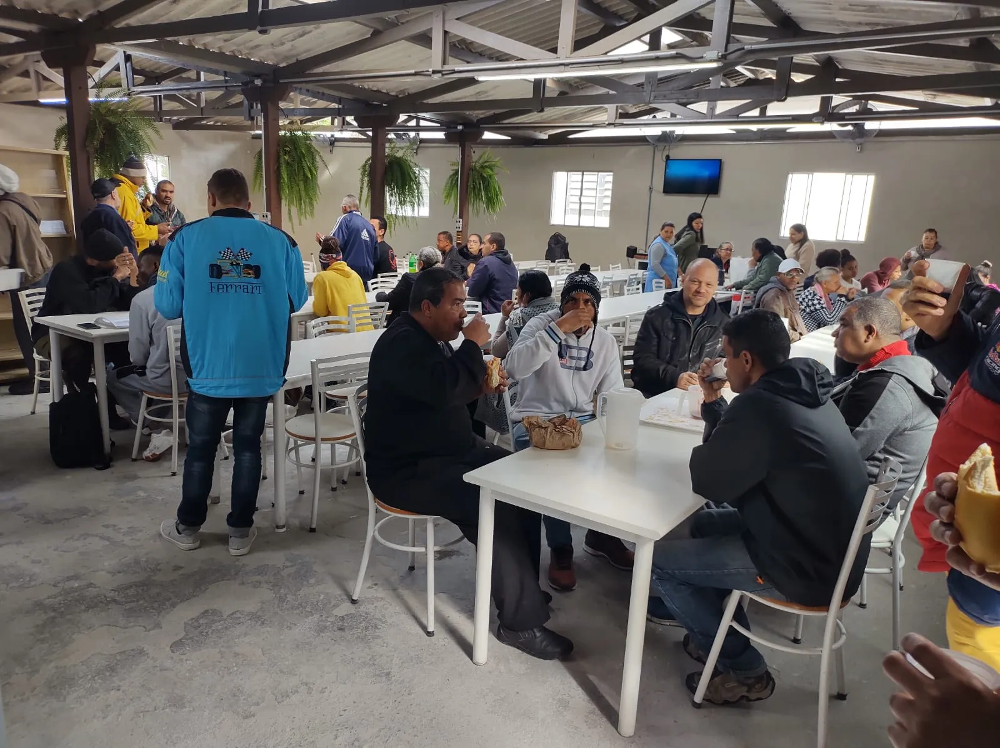
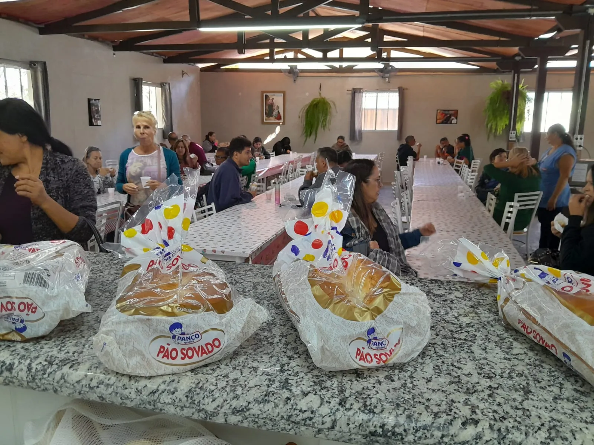
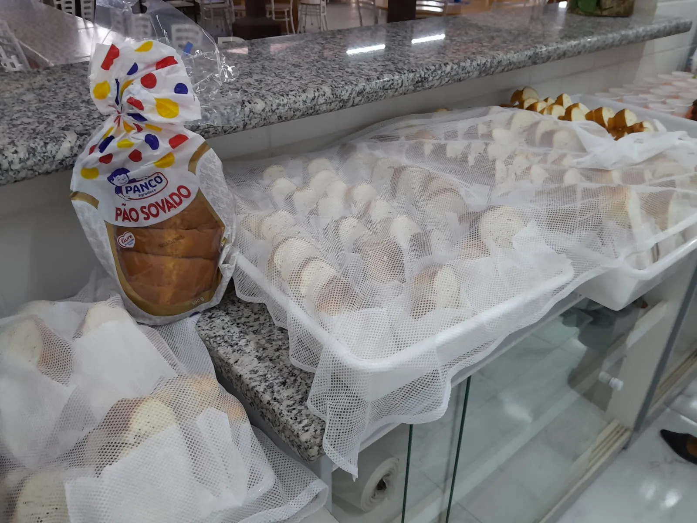
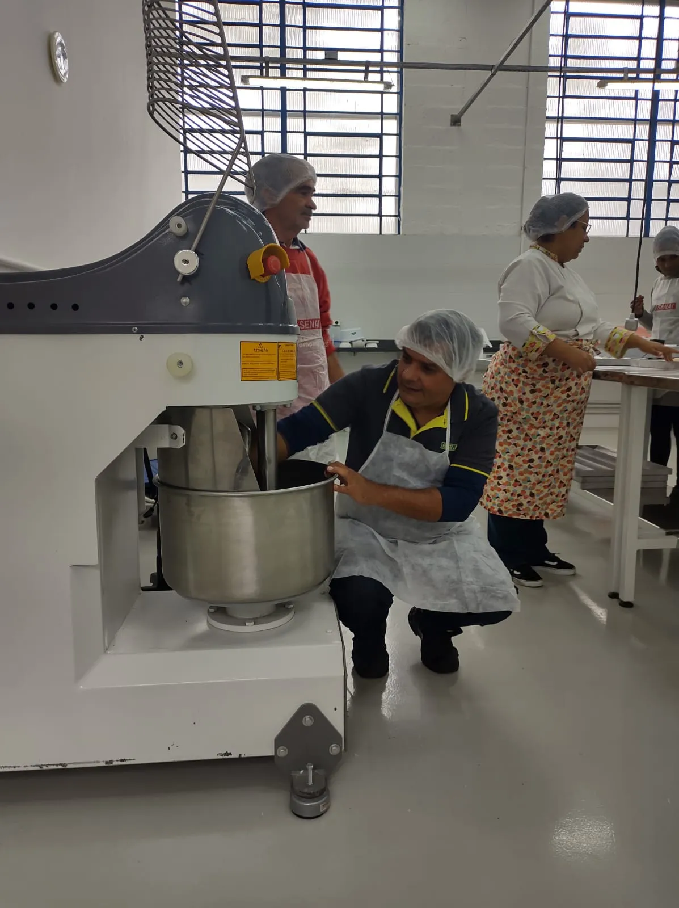
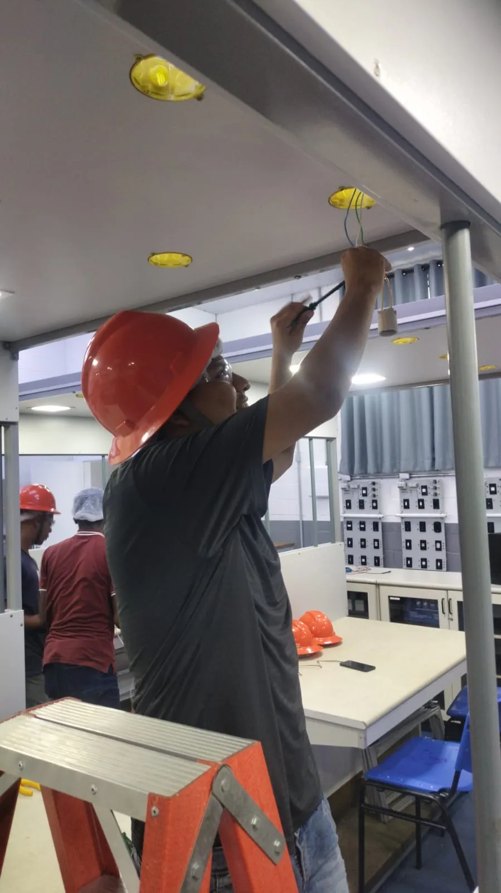
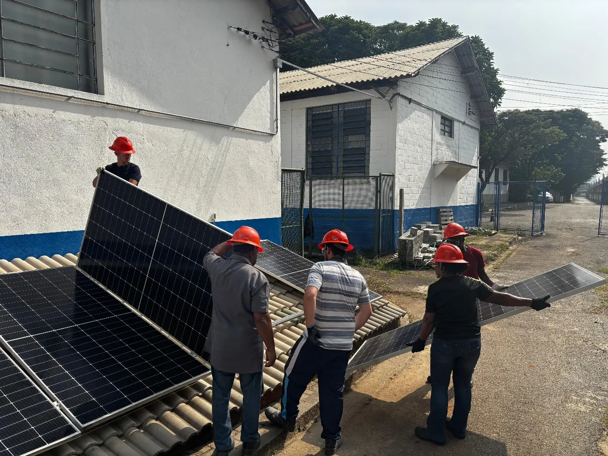
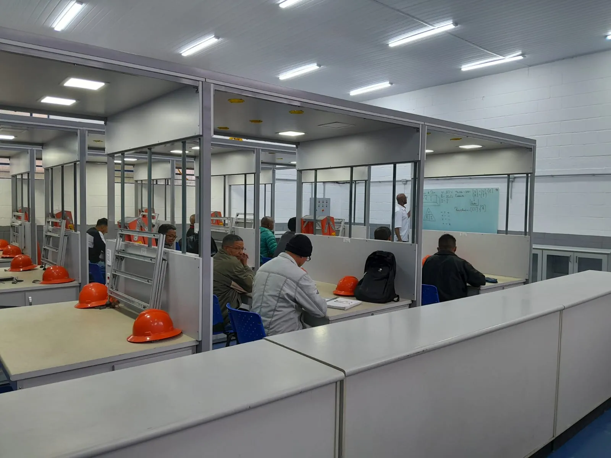
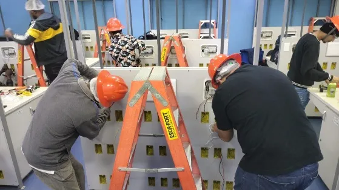

Edição especial
Dezembro de 2026
Uma carta da Escola Profissionalizante Paulo de Tarso para a Panco
Do pão que chega ao diploma que se conquista.
Capítulo I
I
Vocês já fazem parte desta história.
Hoje, gostaríamos de convidá-los a conhecer um pouco mais da história da qual a Panco já faz parte.
Talvez vocês ainda não imaginem a dimensão do impacto que a generosidade da empresa tem proporcionado na vida de centenas de pessoas que encontraram na educação uma oportunidade para transformar suas histórias.
Estas páginas são para mostrar esse impacto de perto.
3

4
Capítulo II
II
66anos acolhendo e transformando vidas
Uma casa que acolhe há 66 anos.
Há 66 anos, a Casa Transitória Fabiano de Cristo acolhe e transforma vidas por meio de ações sociais voltadas às pessoas em situação de vulnerabilidade.
5
Uma casa que acolhe
É nesse espaço que funciona a Escola Profissionalizante Paulo de Tarso, que, em parceria com o SENAI-SP, oferece cursos de qualificação profissional para quem busca o primeiro emprego, uma recolocação no mercado de trabalho ou simplesmente uma nova oportunidade para recomeçar.
Mais do que ensinar uma profissão, esse trabalho devolve autoestima, esperança e perspectivas de futuro a centenas de alunos e suas famílias.
6

7
Capítulo III
III
O pão que chega à mesa.
Ao longo dessa caminhada, a Panco tornou-se uma parceira indispensável.
Por meio da doação de pães, vocês oferecem muito mais do que alimento. Levam acolhimento, dignidade e a certeza de que existem empresas que acreditam no potencial de cada aluno.
8


Cada pacote que chega à mesa diz a quem está recomeçando: tem gente acreditando em você.
9
Capítulo IV
IV
O acolhimento abre portas. A educação transforma vidas.
Nos laboratórios, cada aula representa uma oportunidade de desenvolver competências, recuperar a confiança e acreditar novamente no próprio potencial.
10

11


12
A educação transforma vidas
É emocionante acompanhar a evolução de quem chega inseguro e, pouco a pouco, descobre uma profissão, desenvolve novas habilidades e percebe que é capaz de construir um futuro diferente.

13
A educação transforma vidas

A educação profissional transforma vidas.
E essa transformação também é possível graças ao apoio de parceiros que acreditam no poder da solidariedade.
14
Capítulo V
V
Cada certificado conta uma história.
Ao final dessa jornada, cada certificado representa muito mais do que a conclusão de um curso.
Representa meses de dedicação, esforço, superação e a conquista de uma nova oportunidade de vida.
É por reconhecer a importância da Panco nessa trajetória que gostaríamos de fazer um convite muito especial.
Abrir o convite15